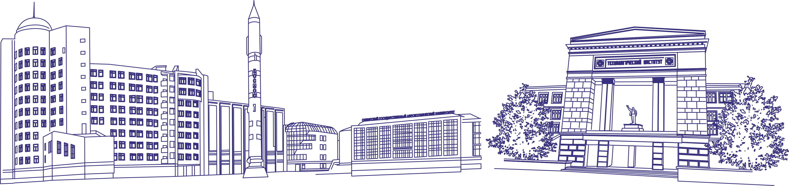

Сибирский государственный университет науки и технологий им. М.Ф.Решетнева
Опорный университет Красноярского края - это масштабный проект Министерства образования и науки РФ, правительства региона по повышению уровня подготовки квалифицированных кадров для реализации потенциала Красноярского края в космической отрасли и развития высокотехнологичных производств на территории региона.Созданный в мае 2016 года, путём объединения Сибирского государственного аэрокосмического университета имени академика М.Ф.Решетнева и Сибирского государственного технологического университета, опорный вуз стал центром компетенций в области инженерно-технического образования, драйвером технологического и социально-экономического развития территории.
Опорный университет ведет подготовку высококвалифицированных специалистов по более чем 100 программам для предприятий авиационной и космической промышленности, машиностроения, лесной, деревообрабатывающей и химической отрасли, научных и финансовых организаций, международных и российских бизнес-структур, масс-медиа.
Отличительной особенностью обучения в университете является сочетание теоретических и практических занятий с выполнением реальных проектов на предприятиях, что позволяет студентам с первых курсов выбрать место будущего трудоустройства. Базовыми партнерами СибГУ им.М.Ф.Решетнева по образовательным и научным проектам, открывающим самые широкие карьерные возможности выпускникам, сегодня являются высокотехнологичные предприятия госкорпораций «Роскосмос» и «Росатом», предприятия малого и среднего бизнеса края, резиденты инновационного кластера «Технополис Енисей» и Промышленного парка ТОСЭР Железногорск, крупнейшие банки и ведомственные организации.
Особое внимание в Опорном университете уделяется развитию у студентов всех специальностей навыков технологического и социального предпринимательства, коммерциализации инноваций и развития бизнеса как ключевых компетенций успешных инженеров нового поколения.
Университет предоставляет всем студентам возможности заниматься научными исследованиями в 20 ведущих научных школах, раскрыть творческие способности в 50 студиях художественного творчества и развить спортивные достижения в более чем 25 секциях.
Опорный университет занимает лидирующие позиции в регионе по реализации международного сотрудничества, предоставляя возможности лучшим студентам участвовать в программах, реализуемых совместно с зарубежными партнерами из 25 стран мира, пройти включенное обучение, стажировки, а также получить второй диплом в ведущих вузах России и зарубежья.
